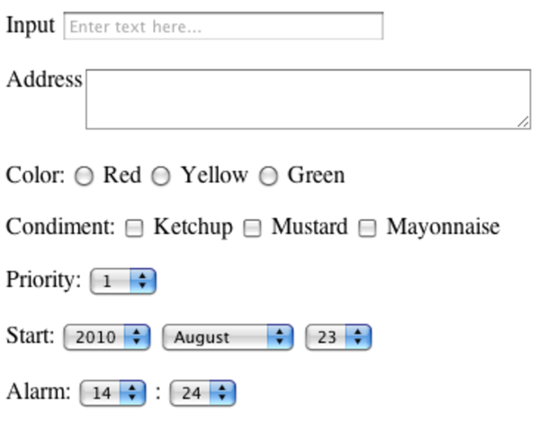

When you write a view, you’re writing a template: something that will get expanded to generate the final result. To understand how these templates work, we need to look at three areas:
Where the templates go
The environment they run in
What goes inside them
The render method expects to find templates in the app/views directory of the current application. Within this directory, the convention is to have a separate subdirectory for the views of each controller. Our Depot application, for instance, includes products and store controllers. As a result, we have templates in app/views/products and app/views/store. Each directory typically contains templates named after the actions in the corresponding controller.
You can also have templates that aren’t named after actions. You render such templates from the controller using calls such as these:
render(action: 'fake_action_name') |
|
render(template: 'controller/name') |
|
render(file: 'dir/template') |
The last of these allows you to store templates anywhere on your filesystem. This is useful if you want to share templates across applications.
Templates contain a mixture of fixed text and code. The code in the template adds dynamic content to the response. That code runs in an environment that gives it access to the information set up by the controller.
All instance variables of the controller are also available in the template. This is how actions communicate data to the templates.
The controller object’s flash, headers, logger, params, request, response, and session are available as accessor methods in the view. Apart from the flash, view code probably should not use these directly, because the responsibility for handling them should rest with the controller. However, we do find this useful when debugging. For example, the following html.erb template uses the debug method to display the contents of the session, the details of the parameters, and the current response:
<h4>Session</h4> <%= debug(session) %> |
|
<h4>Params</h4> <%= debug(params) %> |
|
<h4>Response</h4> <%= debug(response) %> |
The current controller object is accessible using the attribute named controller. This allows the template to call any public method in the controller (including the methods in ActionController::Base).
The path to the base directory of the templates is stored in the attribute base_path.
Out of the box, Rails supports four types of templates:
|  |
|
Figure 48. Some of the common ways to enter data into forms |
Builder templates use the Builder library to construct XML responses. We talk more about Builder in Section 25.1, Generating XML with Builder.
CoffeeScript templates create JavaScript, which can change both the presentation and the behavior of your content in the browser.
ERb templates are a mixture of content and embedded Ruby. They are typically used to generate HTML pages. We talk more about ERB in Section 25.2, Generating HTML with ERb.
SCSS templates create CSS stylesheets to control the presentation of your content in the browser.
By far, the one that you will be using the most will be ERB. In fact, you made extensive use of ERB templates in developing the Depot application.
So far in this chapter, we have focused on producing output. In Chapter 20, Action Dispatch and Action Controller, we focused on processing input. In a well-designed application, these two are not unrelated: the output we produce contains forms, links, and buttons that guide the end user to producing the next set of inputs. As you might expect by now, Rails provides considerable amount of help in this area too.